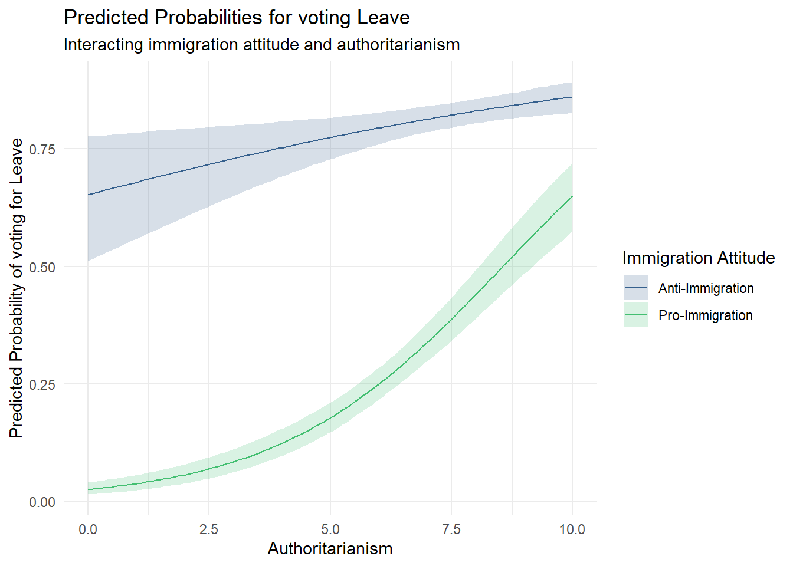
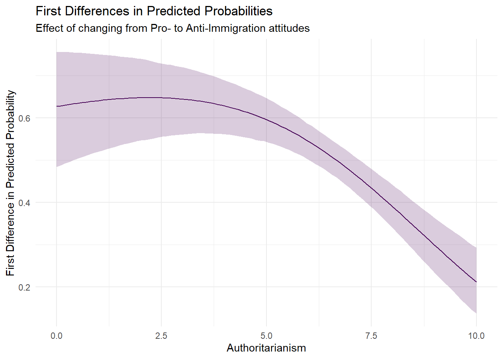
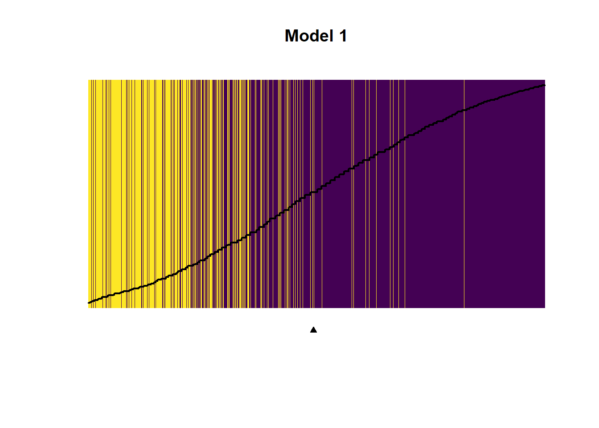

The effect of Anti-immigration attitudes on voting for Leave in the 2016 EU Referendum
Author
Jannik Marian Hoffmann
Published
August 14, 2024
Introduction
The 2016 United Kingdom European Union membership referendum, commonly known as the Brexit referendum, marked a pivotal moment in British and European politics. This study aims to investigate the determinants of the Brexit vote, focusing specifically on the relationship between attitudes towards immigration, levels of authoritarianism, and the likelihood of voting to leave the European Union. Our primary hypothesis is that anti-immigration attitudes predict a higher likelihood of voting for Brexit, with this effect being moderated by individuals’ levels of authoritarianism.
Shortened Theoretical Background
The Brexit vote has been the subject of extensive research, with scholars examining various factors that influenced the referendum outcome. Previous studies have highlighted the importance of immigration concerns (Goodwin and Milazzo 2017), economic grievances (Colantone and Stanig 2018), and cultural anxiety (Norris and Inglehart 2019) in shaping voting behavior.
Our study builds on this literature by examining the interplay between immigration attitudes and authoritarianism. Authoritarianism, characterized by a preference for social order and conformity (Altemeyer 1981), has been linked to support for populist and nationalist movements (Stenner 2005). We posit that individuals with higher levels of authoritarianism may be more susceptible to anti-immigration rhetoric, thus amplifying the effect of immigration attitudes on Brexit support.
Data and Methodology
Data Source and Sample
We use a subsample of 3000 respondents from the 15th wave of the British Election Study. This dataset provides our variables of interest.
Show the code
data <-read.csv("raw-data/bes15.csv")# Recode immigSelf variable to reverse its scaledata$immigSelf <-recode(data$immigSelf, `0`=10L, `1`=9L, `2`=8L, `3`=7L, `4`=6L, `5`=5L, `6`=4L, `7`=3L, `8`=2L, `9`=1L, `10`=0L)# Prepare dataset for later substantive interpretation# Calculate mean immigration attitude for Farage supportersfaragesupporters <-subset(data, likeFarage >=8) mean(faragesupporters$immig_att, na.rm =TRUE)
[1] 8.38417
Show the code
# Calculate mean immigration attitude for Corbyn supporterscorbynsupporters <-subset(data, likeCorbyn >=8)mean(corbynsupporters$immig_att, na.rm =TRUE)
Our dependent variable is the respondent’s vote in the EU referendum, coded as 1 for “Leave” and 0 for “Remain”.
Main Independent Variables
Attitudes towards immigration: Measured on an ordinal scale from 0 (very positive) to 12 (very negative). Despite the general inappropriateness of treating ordinal variables as continuous in regression models, we treat this variable as continuous. This decision is based on the range of 10 or more categories, which suggests that differences between categories are likely small enough to justify this approach. Grouping the levels (e.g., into positive, neutral, and negative views) would result in lost information.
Authoritarianism: Measured on a Likert scale from 0 (low authoritarianism) in 0.5-point increments to 10 (high authoritarianism). This is also treated as a continuous variable based on the same assumption as the immigration attitude variable.
Additional Variables
The dataset includes items capturing respondents’ attitudes towards certain British politicians (Nigel Farage and Jeremy Corbyn). While not included in our model, these are useful for substantive interpretation and provide a basis for simulated scenarios comparing mean immigration attitudes of Corbyn and Farage supporters.
Control Variables
We include several control variables that we assume influence both the independent and dependent variables:
Age: We assume older voters are both less favorable towards immigration and more likely to vote for Leave.
Household income: We hypothesize that higher household incomes may be associated with a desire to maintain EU economic benefits, while lower incomes may correlate with desires to limit immigration and prioritize jobs for native-born citizens.
Ethnicity: A dummy variable for being ethnically White British, assumed to influence both attitudes towards immigration and likelihood of voting Leave.
Model Specification
Given the dichotomous nature of our dependent variable, we employ a binomial model. Specifically, we use logistic regression. The stochastic component is given by:
\(Y_i \sim \text{Bernoulli}(\pi_i)\)
We estimate three models:
Base model: Brexit vote regressed on attitudes towards immigration and authoritarianism.
Interaction model: Adds an interaction term between the two independent variables.
Full model: Includes control variables (age, household income, ethnicity).
To evaluate the results, we use simulation to calculate and visualize quantities of interest, accounting for estimate uncertainty using the framework described by King, Tomz, and Wittenberg (2000). For robustness, we also use an alternative specification for anti-immigration attitudes.
Show the code
load("data/prepared_data.RData") # Load prepared data# Fit logistic regression modelsmodel1 <-glm(p_eurefvote ~ immig_att + al_scaleW14, data = data, family =binomial(link = logit))model2 <-glm(p_eurefvote ~ immig_att + al_scaleW14 + immig_att*al_scaleW14, data = data, family =binomial(link = logit))model3 <-glm(p_eurefvote ~ immig_att + al_scaleW14 + eth_wBrit + age + gross_household_grouped + immig_att*al_scaleW14, data = data, family =binomial(link = logit))model4 <-glm(p_eurefvote ~ immigSelf + al_scaleW14 + eth_wBrit + age + gross_household_grouped + immigSelf*al_scaleW14, data = data, family =binomial(link = logit))
Descriptive Statistics
Show the code
library(stargazer)# Capture the LaTeX output - This is the code to generate the html table below# stargazer(data, # covariate.labels = c("Leave Vote in EU Ref", "Attitude towards Immigration", # "Preferred level of Migration", "Authoritarianism Scale", # "Ethnically White British", "Age", "Gross Household Income"),# summary.stat = c("n", "mean", "sd", "min", "p25", "median", "p75", "max"),# type = "html",# title = "Descriptive Statistics",# float = FALSE,# table.placement = "H",# header = FALSE)
Statistic
N
Mean
St. Dev.
Min
Pctl(25)
Median
Pctl(75)
Max
Leave Vote in EU Ref
2,982
0.507
0.500
0
0
1
1
1
Attitude towards Immigration
2,985
5.012
3.509
0
2
5
8
12
Preferred level of Migration
2,985
6.193
2.678
0
5
6
8
10
Authoritarianism Scale
2,982
6.343
2.250
0.000
5.000
6.500
8.000
10.000
Ethnically White British
2,983
0.937
0.244
0
1
1
1
1
Age
2,985
55.361
14.582
20
45
58
67
94
Gross Household Income
2,990
7.085
3.508
1
4
7
10
15
To begin with, all relevant variables and their descriptive statistics are presented above in Table 1. As can be seen by the mean of the dichotomous variable Brexit Vote, 50.7% of respondents voted for the Brexit while 49.3% voted against which is very close to the official results of the Brexit referendum with 51.9% of voters for “leave”. Both the variable “Attitude towards Immigration” and “Desired immigration level” are skewed towards the right. Authoritarianism is also skewed to the left. From the 25% quantile, median and 75% quantile it is evident that age of the respondents is highly skewed to the right with people under 45 making up only 25% of the sample and 50 percent of the sample being over 58. 93.7% of respondents are of White British ethnicity. For each variable, under 20 cases are dropped because of missing values.
Results and Analysis
Regression Results
Show the code
# Generate regression results table using stargazerstargazer(model1, model2, model3, model4,dep.var.labels =c("Leave vote in EU-Referendum"),covariate.labels =c("Attitude towards Immigration", "Preferred level of Migration", "Authoritarianism Scale", "Ethnically White British", "Age", "Medium Household Income(25\\% to 75\\% quantile)", "High Household Income (>75\\% quantile)", "Attitude towards Immigration*Authoritarianism Scale", "Preferred level of Migration*Authoritarianism Scale"),type ="text",title ="Logit Analyses of Determinants of Brexit Vote",float =TRUE,table.placement ="H",header =FALSE)
Logit Analyses of Determinants of Brexit Vote
===============================================================================================
Dependent variable:
-------------------------------------------
Leave vote in EU-Referendum
(1) (2) (3) (4)
-----------------------------------------------------------------------------------------------
Attitude towards Immigration 0.369*** 0.724*** 0.725***
(0.018) (0.071) (0.073)
Preferred level of Migration 0.846***
(0.093)
Authoritarianism Scale 0.315*** 0.538*** 0.537*** 0.626***
(0.026) (0.051) (0.053) (0.079)
Ethnically White British 0.547*** 0.672***
(0.208) (0.207)
Age 0.008** 0.007*
(0.004) (0.004)
Medium Household Income(25% to 75% quantile) -0.134 -0.061
(0.121) (0.120)
High Household Income (>75% quantile) -0.583*** -0.559***
(0.129) (0.127)
Attitude towards Immigration*Authoritarianism Scale -0.051*** -0.052***
(0.010) (0.010)
Preferred level of Migration*Authoritarianism Scale -0.056***
(0.013)
Constant -3.806*** -5.288*** -5.941*** -7.688***
(0.176) (0.352) (0.461) (0.626)
-----------------------------------------------------------------------------------------------
Observations 2,949 2,949 2,864 2,864
Log Likelihood -1,391.723 -1,376.487 -1,307.132 -1,337.936
Akaike Inf. Crit. 2,789.446 2,760.973 2,630.264 2,691.872
===============================================================================================
Note: *p<0.1; **p<0.05; ***p<0.01
The results of the regression analysis are shown above in Table 2. In the first parsimonious model both attitudes towards immigration and authoritarianism have a positive effect on the probability of voting for “Leave”, both being significant at the 1% level. They remain positive and significant at this level across all estimated models. In the second model the direction of association for the main independent variables stays the same, with all coefficients still being significant on the 1% level. The interaction effect is negative and significant at the 1% level, indicating that the effect of attitudes towards immigration on voting for “Leave” decreases as authoritarianism increases. In the third model, I include the control variables age, grouped gross household income and the dummy variable for being ethnically white Britain.
Age is positive and significant at the 5% level, indicating that with higher age, the probability of voting for Brexit increases. While the effect of medium levels of household income is not significant, high levels of household income have a negative effect on the probability of voting for Brexit, being significant at the 1% level. The dummy variable White British ethnicity has a positive effect, significant at the 1% level, indicating that being White British increases the probability of voting for Brexit. Lastly, model 4 shows that these direction, approximate size and significance of the results are not sensitive to a slightly different concept specification, using the variable “Desired immigration level” instead of “Attitude towards Immigration”. Both the log-likelihood and AIC of the third model is the smallest one, therefore Model 3 is the one that fits the data best compared to the other three.
Predicted Probabilities and First Differences
Show the code
# Instead of using a package like ggeffects I decided to calculate the statistics myself.# Extract coefficients and variance-covariance matrix from model3beta_hat_4 <-coef(model3)V_hat_4 <-vcov(model3)# Set number of simulationsnsim <-1000# Draw from multivariate normal distributionS_4 <-mvrnorm(n = nsim, mu = beta_hat_4, Sigma = V_hat_4)# Set up scenarios for simulationauth_values <-seq(min(data$al_scaleW14, na.rm =TRUE), max(data$al_scaleW14, na.rm =TRUE), length.out =100)Pro_Immig <-quantile(data$immig_att, probs =0.25, na.rm =TRUE)Anti_immig <-quantile(data$immig_att, probs =0.75, na.rm =TRUE)# Create scenariosscenario_low <-cbind(1, Pro_Immig, auth_values, mean(data$eth_wBrit, na.rm =TRUE), mean(data$age, na.rm =TRUE), 1, 0, Pro_Immig*auth_values)scenario_high <-cbind(1, Anti_immig, auth_values, mean(data$eth_wBrit, na.rm =TRUE), mean(data$age, na.rm =TRUE), 1, 0, Anti_immig*auth_values)# Calculate expected valuesXbeta_low <- S_4 %*%t(scenario_low)Xbeta_high <- S_4 %*%t(scenario_high)# Calculate predicted probabilitiespred_prob_low <- (exp(Xbeta_low)) / (1+exp(Xbeta_low))pred_prob_high <- (exp(Xbeta_high)) / (1+exp(Xbeta_high))# Calculate first differencesFD <- pred_prob_high - pred_prob_low
Show the code
load("data/prepared_data.RData") # Load prepared dataload("data/regression_models.RData") # Load fitted modelsload("data/simulation_results.RData") # Load simulation results# Predicted probabilities plotggplot() +geom_line(aes(x = auth_values, y =apply(pred_prob_low, 2, mean), color ="Pro-Immigration")) +geom_ribbon(aes(x = auth_values, ymin =apply(pred_prob_low, 2, quantile, probs =0.025),ymax =apply(pred_prob_low, 2, quantile, probs =0.975),fill ="Pro-Immigration"), alpha =0.2) +geom_line(aes(x = auth_values, y =apply(pred_prob_high, 2, mean), color ="Anti-Immigration")) +geom_ribbon(aes(x = auth_values, ymin =apply(pred_prob_high, 2, quantile, probs =0.025),ymax =apply(pred_prob_high, 2, quantile, probs =0.975),fill ="Anti-Immigration"), alpha =0.2) +scale_color_viridis(discrete =TRUE, begin =0.3, end =0.7) +scale_fill_viridis(discrete =TRUE, begin =0.3, end =0.7) +labs(title ="Predicted Probabilities for voting Leave",subtitle ="Interacting immigration attitude and authoritarianism",x ="Authoritarianism",y ="Predicted Probability of voting for Leave",color ="Immigration Attitude",fill ="Immigration Attitude") +theme_minimal()

Predicted Probabilities for Voting Leave
Figure 2 shows the predicted probabilities of voting “Leave” for two different simulated scenarios of attitudes towards immigration. We compare the predicted probabilities of (1) pro-immigration attitudes, based on the 25th percentile of immigration attitudes and (2) anti-immigration attitudes, based on the 75th percentile of immigration attitudes as authoritarianism varies.
The chosen scenarios include all other covariates from Model 3 set to their mean or median and a sequence of values for authoritarianism from its minimum to its maximum. In this scenario, the household income is set to medium, as the median/mean gross household income is included in this category.
As already indicated by the positive coefficients for the main independent variables in Table 2, more anti-immigrant attitudes predict a higher likelihood of voting for Leave. As seen, the lines showing the predicted probabilities are converging for higher values of authoritarianism, meaning that the size of the effect of immigration attitudes on voting for Leave is conditional on authoritarianism. However, the confidence intervals are not overlapping even for the highest values of authoritarianism, meaning that there still is a small effect there.
Additionally, this plot illustrates well that the model expects an extremely low probability for people with pro-immigration attitudes and low levels to vote for Leave.
Show the code
# First differences plotggplot() +geom_line(aes(x = auth_values, y =apply(FD, 2, mean)), color =viridis(1)) +geom_ribbon(aes(x = auth_values, ymin =apply(FD, 2, quantile, probs =0.025),ymax =apply(FD, 2, quantile, probs =0.975)),fill =viridis(1), alpha =0.2) +labs(title ="First Differences in Predicted Probabilities",subtitle ="Effect of changing from Pro- to Anti-Immigration attitudes",x ="Authoritarianism",y ="First Difference in Predicted Probability") +theme_minimal()

First Differences in Predicted Probabilities
In Figure 3, we plot the first difference for these two specified scenarios. The plotted first differences show a downward trend but are consistently positive for all levels of authoritarianism. This means that across all levels of authoritarianism, more negative views about immigration lead to a higher probability of voting for Brexit.
However, these differences become continuously smaller for higher levels of authoritarianism. This supports the hypothesis that the effect of Anti-Immigration Attitudes is moderated by respondents’ level of authoritarianism. However, the moderating effect only starts to become substantively important around levels 4 to 5 of authoritarianism, as the line for the first differences remains close to flat before.
Model Evaluation
Show the code
# Separation plotslibrary(separationplot)# Separation plot for Model 1separationplot(pred = model1$fitted,actual =as.vector(model2$model$p_eurefvote),line =TRUE,heading ="Model 1",show.expected =TRUE,height =1,col0 =viridis(2)[2],col1 =viridis(2)[1],lwd2 =2,newplot =FALSE)

Separation Plots for Model Evaluation
Show the code
# Separation plot for Model 3separationplot(pred = model3$fitted,actual =as.vector(model3$model$p_eurefvote),line =TRUE,heading ="Model 3",show.expected =TRUE,height =1,col0 =viridis(2)[2],col1 =viridis(2)[1],lwd2 =2,newplot =FALSE)
Separation Plots for Model Evaluation
As an additional evaluation of model fit, we use the Separation plot method by Greenhill, Ward, and Sacks (2011) that shows a visualization to evaluate models based on their ability to “consistently match high-probability predictions to actual occurrences of the event of interest, and low-probability predictions to nonoccurrences of the event of interest” (Greenhill et al. 2011: 990).
In these plots yellow lines are displaying 0s and purple lines are displaying 1s. In a perfect model yellow (for non-events) and purple lines (for events) would be perfectly separated from each other. This is not the case for our models, but we see a clear tendency that with higher predicted probabilities (on the x-axis: going from left to right), the occurrence of purple lines increases. The separation plots between the models look similar, with only marginal differences in the distinction between non-events and events. The marker on the bottom of the figure represents the expected number of total events predicted by the model (sum of predicted probabilities across all observations).
Discussion
Our findings support the hypothesis that anti-immigration attitudes predict a higher likelihood of voting for Brexit. However, the moderating effect of authoritarianism is more complex than initially anticipated. While both anti-immigration attitudes and authoritarianism independently increase the likelihood of a Leave vote, their interaction suggests that the impact of immigration attitudes is strongest among those with lower levels of authoritarianism.
This unexpected result may be explained by the fact that highly authoritarian individuals are already more likely to vote Leave regardless of their specific views on immigration. In contrast, for less authoritarian individuals, their stance on immigration plays a more decisive role in shaping their Brexit vote.
Limitations and Future Research
Several limitations of this study should be noted. First, our analysis is based on cross-sectional data, which limits our ability to establish causal relationships. Future research could benefit from longitudinal data to examine how attitudes evolved over time leading up to the referendum.
Second, while we control for several demographic factors, there may be other important variables not included in our model, such as education level or exposure to EU-related information.
Lastly, our measure of authoritarianism, while standard in the field, may not capture all aspects of this complex construct. Future studies could explore alternative measures or incorporate related concepts like social dominance orientation.
Furthermore, additional robustness checks such as other thresholds for the grouping of household incomes would have been beneficial.
Conclusion
The evidence presented in this paper shows that attitudes towards immigration indeed predict Brexit vote, with the effect being higher for respondents with lower values on the authoritarianism scale. This effect remains consistent with the inclusion of further control variables into the regression model and is not sensitive to a different specification of the independent variable immigration attitudes with a variable that captures preferences for immigration (more or less immigration).
One limitation of this study is that it only examined the relationship between anti-immigration attitudes and likelihood of a Brexit vote and did not explore other potential factors that may have influenced individuals’ voting decisions. Further research could investigate these other factors and how they interact with anti-immigration attitudes and authoritarianism to influence the voting behavior, such as educational attainment, which we assume to be a confounder for both anti-immigration attitudes and the Brexit vote.
Additionally, it would be interesting to explore whether the relationship between anti-immigration attitudes, and the interaction with levels of authoritarianism still matter for support of the Brexit policies in the current political climate.
References
Altemeyer, Bob. 1981. Right-Wing Authoritarianism. University of Manitoba Press.
Colantone, Italo, and Piero Stanig. 2018. “Global Competition and Brexit.”American Political Science Review 112(2): 201–18.
Goodwin, Matthew J, and Caitlin Milazzo. 2017. “Taking Back Control? Investigating the Role of Immigration in the 2016 Vote for Brexit.”The British Journal of Politics and International Relations 19(3): 450–64.
Greenhill, Brian, Michael D Ward, and Audrey Sacks. 2011. “The Separation Plot: A New Visual Method for Evaluating the Fit of Binary Models.”American Journal of Political Science 55(4): 991–1002.
King, Gary, Michael Tomz, and Jason Wittenberg. 2000. “Making the Most of Statistical Analyses: Improving Interpretation and Presentation.”American Journal of Political Science: 347–61.
Norris, Pippa, and Ronald Inglehart. 2019. Cultural Backlash: Trump, Brexit, and Authoritarian Populism. Cambridge University Press.
Stenner, Karen. 2005. The Authoritarian Dynamic. Cambridge University Press.